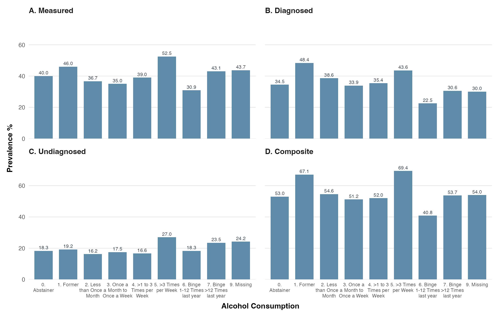
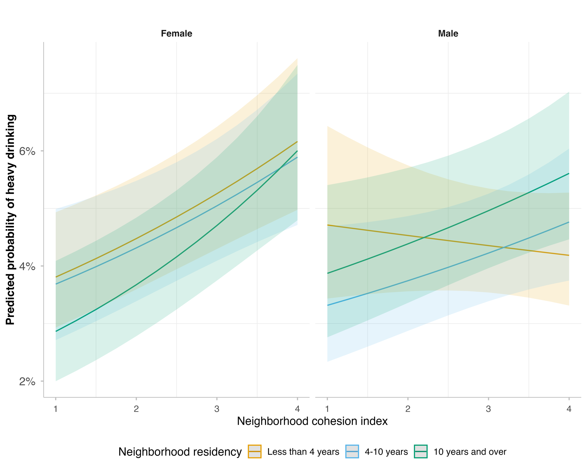

Alcohol & hypertension
Hypertension prevalence by drinking pattern, shown four ways (measured, diagnosed, undiagnosed, and composite).
Data visualizations from my published research, open-source tools, and the occasional experiment — the things I build when a question needs more than a table.

Hypertension prevalence by drinking pattern, shown four ways (measured, diagnosed, undiagnosed, and composite).

Two predicted-probability plots showing how the protective tie strengthens the longer adults stay put.
Watching the alcohol–cardiovascular mortality curve bend as abstainers are unpacked.
A state-by-state view of how survey items line up — or don't — across years.
A weekly dashboard that decompresses dense NIH funding notices into structured, searchable, scannable cards — hybrid rule + LLM pipeline, triage feed, deadline calendar.
A reproducible, data-driven academic CV — entries live in YAML and BibTeX, and a single render produces the PDF.
A polished, component-rich slide template with 20+ reusable components for academic and professional talks.
Scores student syllabi against departmental course content (local NLP, Ollama, and Claude API) and exports match scores as PDF reports.
Rendering hazard surfaces as flow fields — pretty, not peer-reviewed.
One survey, twelve readable facts, set as a typographic poster.
Tools, methods, and techniques I've picked up from the open-source and research communities — a running list of what I'm learning and putting to use.
| Tool / method | Type | Where I found it | What I use it for |
|---|---|---|---|
| gtsummary | R package | R/Medicine community | Publication-ready Table 1 and regression tables. |
| targets | R package | rOpenSci | Reproducible, dependency-aware analysis pipelines. |
| tidymodels | Framework | Posit & community | Consistent machine-learning workflows for prediction. |
| Polars | Python library | PyData community | Fast wrangling of large national survey files. |
| SHAP | Method | ML interpretability literature | Explaining feature contributions in predictive models. |
| mapgl / MapLibre | Visualization | Spatial-data community | Interactive maps — like the one on my About page. |